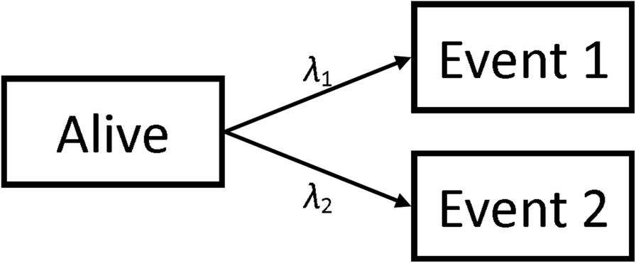
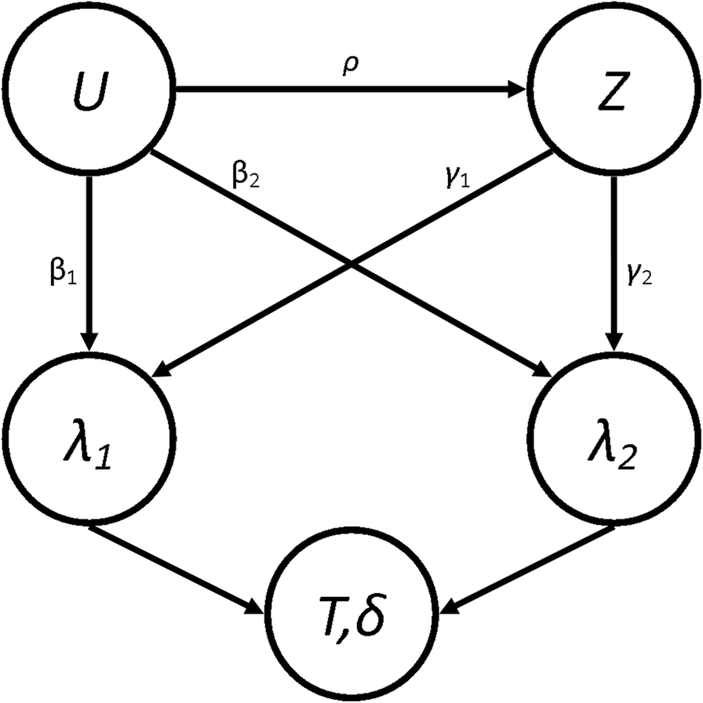

2 Methods
We considered a simulation scenario in which our population can experience two events; one of which is the event-of-interest (Event 1), the other is a competing event (Event 2). We model a single unmeasured confounding covariate, \(U \sim N (0,1)\) and a binary treatment indicator, \(Z\). We varied how much \(U\) and \(Z\) affect the probability distribution of the two events as well as how they are correlated. For example, \(Z\) could represent whether a patient is prescribed statins, \(U\) could be their BMI, the event-of-interest could be cardiovascular disease related mortality and a competing event could be cancer-related mortality. We followed best practice for conducting and reporting simulations studies [16].
The data-generating mechanism defined two cause-specific hazard functions (one for each event), where the baseline hazard for event 1 was \(k\) times that of event 2, see Fig. @ref(fig:Transition_Diagram). We assumed a baseline hazard that was either constant (exponential distributed failure times), linearly increasing (Weibull distributed failure times) or biologically plausible [17]. The hazards used were thus:
\[\begin{align} \lambda_1(t|U,Z) &= ke^{\beta_1U + \gamma_1Z}\lambda_0(t)\\ \lambda_2(t|U,Z) &= ke^{\beta_2U + \gamma_2Z}\lambda_0(t) \end{align}\]
\[\begin{equation} \lambda_0(t) \begin{cases} 1 & \textrm{Exponential}\\ 2t & \textrm{Weibull}\\ \exp{-18+7.3t-11.5t^{0.5}\log(t) + 9.5t^{0.5}} & \textrm{Plausible} \end{cases} \end{equation}\]
In the above equations, \(\beta\) and \(\gamma\) are the effects of the confounding covariate and the treatment effect respectively with the subscripts representing which event they are affecting. These two hazard functions entirely describe how a population will behave [18].

We simulated populations of 10,000 patients to ensure small confidence intervals around our treatment effect estimates in each simulation. Each simulated population had a distinct value for \(\beta\) and \(\gamma\). In order to simulate the confounding of \(U\) and \(Z\), we generated these values such that \(\textrm{Corr}(U,Z) = \rho\) and \(\Pr(Z = 1) = \pi\) [19]. Population end times and type of event were generated using the relevant hazard functions. The full process for the simulations can be found in Additional file 1. Due to the methods used to generate the populations, the possible values for \(\rho\) are bounded by the choice of \(\pi\) such that when \(\pi = 0.5\), \(\left|\rho\right| <= 0.797\) and when \(\pi = 0.1\) (or \(\pi=0.9\)), \(\left|\rho\right| <= 0.57\). The relationship between the parameters can be seen in the Directed Acyclic Graph (DAG) shown in Fig. @ref(fig:Model_DAG), where \(T\) is the event time and \(\delta\) is the event type indicator (1 for event-of-interest and 2 for competing event).

From this, we also explicitly calculated what we would expect the true subdistribution treatment effects, \(\Gamma_1\) and \(\Gamma_2\), to be in these conditions [20] (See Additional file 2). It’s worth noting that the values of \(\Gamma\) will depend on the current value of \(\rho\) since they are calculated using the expected distribution of end-times. However, it has been shown [18, 21] that, due to the relationship between the Cause-Specific Hazard (CSH) and the Subdistribution Hazard (SH), only one proportional hazards assumption can be true. Therefore the “true” values of the \(\Gamma\) will be misspecified and represent a least false parameter (which itself is an estimate of the time-dependent truth) [20].
We used the simulated data to estimate the treatment effects under the Cox and Fine & Gray regression methods. We specify that \(U\) is unmeasured and so it wasn’t included in the analysis models. As discussed earlier, the Cox model defines the risk set at time \(t\) to be all patients who have not had any event by time \(t\), whereas the Fine & Gray defines it to be those who have not had the event-of-interest (or competing event) by time \(t\).
For our models, for the events, \(i={1,2}\), we therefore defined the CSH function estimate, \(\hat{\lambda}_i\), and the SH function estimate, \(\hat{h}_i\), to be
\[ \hat{\lambda}_i(t|Z) = \hat{\lambda}_{i0}(t)e^{\hat{\gamma}_iZ} \qquad\qquad \hat{h}_i(t|Z) = \hat{h}_{i0}(t)e^{\hat{\Gamma}_iZ} \]
Where \(\hat{\lambda}_{i0}(t)\) and \(\hat{h}_{i0}(t)\) are the baseline hazard and baseline subdistribution hazard function estimates for the entire population (i.e. no stratification), and \(\hat{\gamma}_i\) and \(\hat{\Gamma}_i\) are the estimated treatment effects. From these estimates, we also extracted the estimate of the subdistribution treatment effect in a hypothetical RCT, where \(\rho=0\) and \(\pi=0.5\) to give \(\hat{\Gamma}_{10}\) and \(\hat{\Gamma}_{20}\). To investigate how the correlation between \(U\) and \(Z\) affects the treatment effect estimate, we compared the explicitly prescribed or calculated values with the simulated estimates. Three performance measures for both events, along with appropriate 95% confidence intervals, were calculated for each set of parameters:
\(\theta_{\textrm{RCT},i} = \textrm{E}\left[\hat{\Gamma}_i - \hat{\Gamma}_{i0}\right]\) ~ The average difference between the SH treatment effect estimate from an idealised, hypothetical RCT situation.
\(\theta_{\textrm{Exp},i} = \textrm{E}\left[\hat{\Gamma}_i - \Gamma_i\right]\) ~ The average bias of the SH treatment effect estimate from the explicitly calculated value.
\(\theta_{\textrm{CSH},i} = \textrm{E}\left[\hat{\gamma}_i - \gamma_i\right]\) ~ The average bias of the CSH treatment effect estimate from the predefined treatment effect.
As mentioned above, the value of \(\Gamma\) will depend on the current value of \(\rho\) and so the estimation of the explicit bias will be a measure of the total bias induced on our estimate of the subdistribution treatment effect in those specific set of parameters. We also evaluate the bias compared to an idealised RCT to see how much of this bias could be mitigated if we were to perform an RCT to assess the effectiveness of the hypothetical treatment. Finally, we found the explicit bias in the cause specific treatment effect to again see the total bias applied to this measure. We did not compared the CSH bias to an idealised RCT as we believed that this could easily be inferred from the CSH explicit results, whereas this information wouldn’t be as obvious in the SH treatment effect due to the existence of a relationship between \(\Gamma\) and \(\rho\).
Eight Scenarios were simulated based on real-world situations. In each scenario, \(\rho\) varied across 5 different values ranging from 0 to their maximum possible value (0.797 for all Scenarios apart from Scenario 5, where it is 0.57, due to the bounds imposed by the values of \(\pi\)). One other parameter (different for different scenarios) varied across 3 different values, and all other parameters were fixed as detailed in Table 1. Each simulation was run 100 times and the performance measures were each pooled to provide small confidence intervals. This gives a total of 1,500 simulations for each of the 8 scenarios. Descriptions of the different scenarios are given below:
No Effect. To investigate whether treatment with no true effect (\(\gamma_2=\gamma_2=0\)) can have an “artificial” treatment effect induced on them in the analysis models through the confounding effect on the event-of-interest. \(\beta_1\) varied between -1, 0 and 1.
Positive Effect. To investigate whether treatment effects can be reversed when the treatment is beneficial for both the event-of-interest and the competing event (\(\gamma_2=\gamma_2=-1\)). \(\beta_1\) varied between -1, 0 and 1.
Differential Effect. To investigate how treatment effect estimates react when the effect is different for the event-of-interest (\(\gamma_2=-1\)) and the competing event (\(\gamma_2=1\)). \(\beta_1\) varied between -1, 0 and 1.
Competing Confounder. To investigate whether treatments with no true effect (\(\gamma_1=\gamma_2=0\)) can have an “artificial” treatment effect induced on them by the effect of a confounded variable on the competing event only (\(\beta_1=0\)). \(\beta_2\) varied between -1, 0 and 1.
Uneven Arms. To investigate how having uneven arms on a treatment in the population can have an effect on the treatment effect estimate (\(\gamma_1=-1\), \(\gamma_2=0\)). \(\pi\) varied between \(\sfrac{1}{10}\), \(\sfrac{1}{2}\) and \(\sfrac{9}{10}\).
Uneven Events. To investigate how events with different frequencies can induce a bias on the treatment effect, despite no treatment effect being present (\(\gamma_1=\gamma_2=0\)). \(k\) varied between \(\sfrac{1}{2}\), \(\sfrac{1}{2}\) and 2.
Weibull Distribution. To investigate whether a linearly increasing baseline hazard function affects the results found in Scenario 1. \(\beta_1\) varied between -1, 0 and 1.
Plausible Distribution. To investigate whether a biologically plausible baseline hazard function affects the results found in Scenario 1. \(\beta_1\) varied between -1, 0 and 1.
[Insert Table 1]